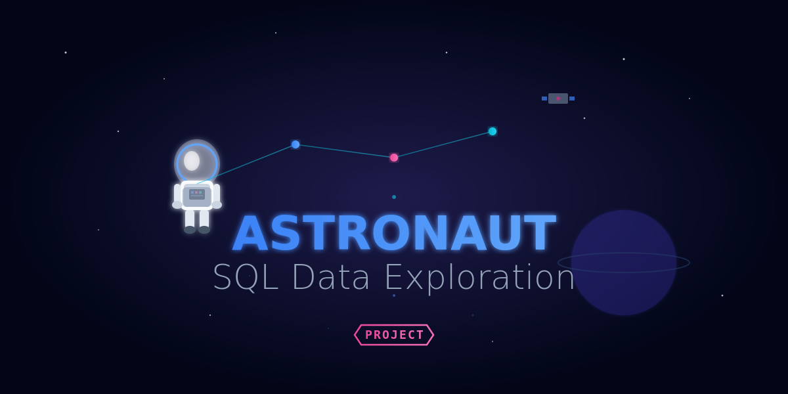
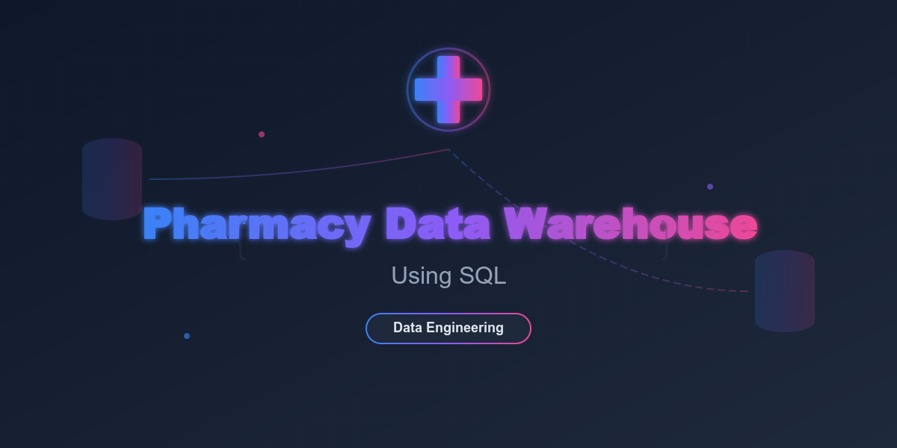
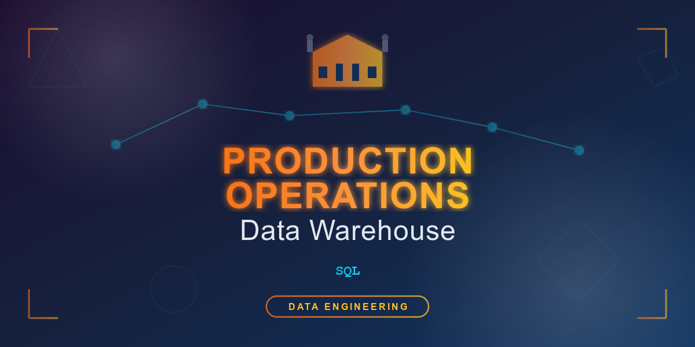

Intro

I’m a senior at UCF pursuing a Bachelor’s in Integrated Studies, focusing on
Health Administration and Business Leadership. My goal is to become a Junior
Data Analyst, with an interest in Business Analyst roles as well.
This portfolio showcases my projects and skills as I work toward a career in
healthcare data and business analysis.
Projects

Features
Compounding Workflow Efficiency Analysis (Pharmacy Operations Project)
In this project, I used Excel to improve the efficiency of a high-volume compounding pharmacy workflow. I manually collected and structured
daily production totals, ensuring consistent data entry and accuracy. I applied formulas such as SUM and AVERAGE to calculate total compounds
produced per shift and analyze workload distribution. Using sorting, filtering, and conditional formatting, I identified high-demand compounds
and potential workflow bottlenecks. Pivot tables allowed me to summarize complex data and uncover patterns in compound types and scheduling
demand, while charts and graphs visualized trends to communicate insights effectively. These techniques provided a clear understanding of
production patterns and supported strategies for scaling operations.
View Project here
Tools: Excel, Power BI, SQL,

Features
This project explores the NASA Astronaut Yearbook dataset using SQL to practice real
data-analysis workflows like aggregation, filtering, categorization, and building new
features using CASE statements. The goal was to analyze how astronaut characteristics
(education, military rank, etc.) relate to spaceflight hours and experience levels.
View Project here
Tools: SQL
Upcoming Projects

Features
...
View Project here
Tools: SQL

Features
...
View Project here
Tools: SQL
Features
...
View Project here
Tools: SQL
About

Military veteran and pharmacy technician with expertise in pharmacy operations, automation, and workflow optimization.
Experienced in using Excel and process tracking to improve efficiency and accuracy in high-volume environments. Currently
developing analytical and technical skills through self-directed learning in SQL, Python, and Power BI to support
data-informed decision-making in healthcare operations and business analysis.
Contact